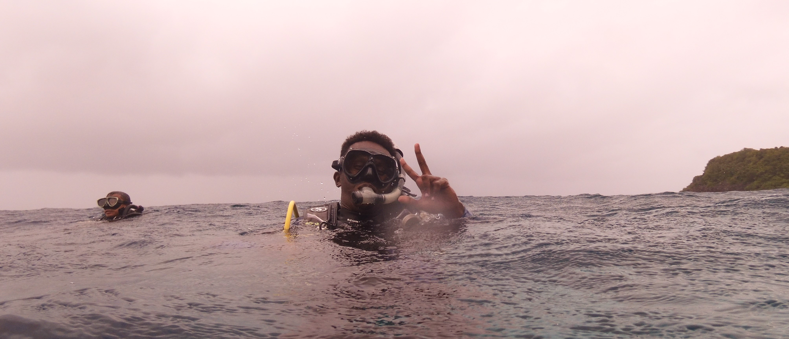

Home
About
Blog
Data science
Somali fisheries
Sci Commun
Photography
Sketch Drawing
Resources
Contact

Follow @omar_marinebio
Omar Mahadalle, BS
MS Student, Marine Biology
PIRE Office, SUAKCREM
SU Marine Laboratory
Contact me
E-mail: omaramahadalle[at]su.edu.ph
Skype: omar.mahadalle
ORCID iD
Driven by curiosity about natural history
View omahadalle's observations »
 ORCID iD
ORCID iD